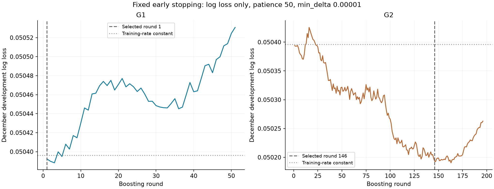
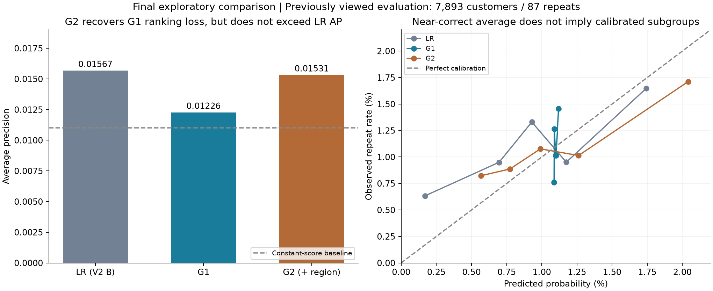

Archived stage report. Later stages are documented in
the project README. This packaging preview did not rerun any experiments.
Olist：最后一次 LightGBM 固定对照
2026-10-16 · LR、G1、G2 · 无追加调参、重训或校准
结论：G1更接近总体发生率，但排序AP低于逻辑回归。G2相对G1有排序和概率指标的点估计改善，前790人命中18位，然而增量区间包含零；其整体AP仍略低于逻辑回归。没有达到预先约定的明确优势标准，不据此替换逻辑回归或宣称地区作用已验证。
评估集在前两轮已经查看，本轮属于最终探索性算法对照，不是新的独立验证。固定方案可以限制继续追分，不能消除已经使用过评估信息的影响。
1. 数据与比较对象
训练为2017年7—8月6,459人/71次复购，开发集为12月6,862人/60次复购，修订评估为2018-04-01至05-02的7,893人/87次复购。时间边界满足90天标签已成熟。LR直接加载V2的B，未重训，预测逐项与V2核对一致。
- G1：与LR相同首购背景和履约信息，直接复用LR训练期预处理、缺失填补、标准化及低频类别编码。
- G2：G1加首购前180天的当地平滑品类占比、当地/全国占比对数。追加特征的预处理只拟合训练数据。
不包含月份，不增加其他变量，不做类别平衡、概率校准或开发集后重训。只比较一套参数和一个随机种子。地区指标延续前次时点计算，非真实文化或完整需求测量。
2. 早停结果完整保留
| 模型 |
选中轮数 |
共评估轮数 |
选中开发集Log loss |
原始数值最小轮数 |
选中模型树数 |
| G1 |
1 |
51 |
0.05039234 |
3 |
1 |
| G2 |
146 |
196 |
0.05019336 |
163 |
146 |
只监控开发集binary_logloss，最多500轮，连续50轮没有超过0.00001的改善即停止。使用回调记录的best_iteration_；因存在min_delta，它不一定等于原始数值最小的轮数。G1选中第1轮后没有满足规则的进一步改善，所以保留仅1棵树，没有放宽参数。G2选中第146轮。

两个模型及轮数先保存并哈希锁定，随后才生成评估预测。G1/G2选择了不同轮数，因此G2-G1衡量的是“加入地区信息并按同一早停规则选择模型”的流程增量，不是固定树数量下的纯特征效应。
3. 与逻辑回归的结果比较
评估实际复购率为1.102%。AP为Average Precision，↑越高越好；Log loss、Brier为概率损失，↓越低越好。

G1对LR：AP从0.015668降至0.012260，ROC-AUC也下降。平均概率更接近实际，Log loss点估计改善，但增量不确定区间包含零。它的概率几乎都挤在总体发生率附近，更接近总体均值并不等于更善于识别个人差异。
G2对G1：AP提高约0.003051，Log loss和Brier点估计均改善；前790人中命中18位，命中率2.278%，覆盖全部复购客户20.69%，约为随机筛选预期命中率的2.07倍。但两种重采样的AP增量区间都包含零，概率指标增量区间也包含零，未达到事前约定的明确改善标准。
G2对LR：前790人命中从11位变成18位，概率损失点估计更好，但整体AP和ROC-AUC略低。这是固定筛选规模与整体排序指标之间的取舍，不能只取18比11就宣布树模型整体胜出。G2相对训练期固定均值的概率改善也很小、区间包含零。
4. G1的同分问题
G1只有1棵树，其最高分组共有1,548人、22位复购客户，模型无法在这组内部排序。按照事先固定的客户ID顺序取790人，得到13位复购客户。若组内均匀随机选取，期望约11.23位。这是解释同分影响的计算，不是另换规则评估或重新训练。
所以G1的“13人”不能当作精细筛选能力。AP按同分组整体计算；五等人数校准图也可能切开同分组，G1相邻组的率差不代表模型区分出了那些客户。G2在第790名边界只有1人，不存在该边界歧义。
5. 不确定区间与地区信息
客户级和州级各1000次配对bootstrap。以下差值为前者减后者；AP正值为改善，Log loss/Brier负值为改善。均基于固定模型预测，未重新训练或重新选择早停轮数。
地区特征确实被G2用于分裂，但训练集分裂次数或增益不是额外预测价值的证明，更不是因果证据。本轮只能说：在这套固定树模型流程下，地区信息出现正向点估计增量，证据不足以认定稳定有效。
开发集只有60个复购事件，早停本身也可能受噪声影响。当前区间不涵盖训练与早停选择的不稳定性，也不能修复评估集重复使用造成的偏差。不能把“区间包含零”写成“证明没有作用”。
6. 概率方面仍需保留的限制
G2平均预测1.127%，接近实际1.102%，但这只说明整体均值接近。五组校准中，低分组仍有低估，高分组可能高估；每组事件数有限，区间较宽。与历史均值相比，概率指标改善也未显示稳定优势，不能称作概率已全面校准。
7. 最终判断与停止位置
按事先标准，本轮没有充分证据证明增加树模型复杂度值得，也没有稳定验证地区指标的额外价值。保留LR作为简单参照，将G1/G2完整记录为有取舍、证据不足的探索对照。这里的“未证明值得”不等于“证明树模型一定更差”。
到此结束约定的算法尝试，不根据这些分数追加特征、种子、参数或校准。保留项目中成立的证据、失败结果与观察局限，不把该评估集再次称为全新测试集。
8. 参数、复核与文件
完整固定参数（LightGBM 4.7.0）
| 参数 |
固定值 |
| boosting_type |
gbdt |
| objective |
binary |
| metric |
binary_logloss |
| learning_rate |
0.03 |
| n_estimators |
500 |
| max_depth |
3 |
| num_leaves |
7 |
| min_child_samples |
500 |
| min_child_weight |
0.001 |
| reg_lambda |
10.0 |
| reg_alpha |
0.0 |
| min_split_gain |
0.0 |
| max_bin |
63 |
| subsample |
1.0 |
| subsample_freq |
0 |
| colsample_bytree |
1.0 |
| class_weight |
None |
| is_unbalance |
False |
| scale_pos_weight |
1.0 |
| random_state |
20261022 |
| deterministic |
True |
| force_col_wise |
True |
| n_jobs |
2 |
仅训练两次LightGBM。独立重算AP与Brier一致，保存的文本模型预测与训练对象一致，LR预测复现V2的B。此前V1/V2输出、工作文件和压缩包共63个文件前后SHA-256完全相同。无实施修复或结果驱动的追加调整。
方案注册UTC时间：2026-10-17T02:04:10.791435+00:00；模型锁定UTC时间：2026-10-17T02:05:26.063632+00:00。模型锁定记录发生在生成本轮评估预测之前，不代表原评估数据从未被看过。
完整指标与区间 · 指标表 · 学习曲线数据 · 评估前模型锁定记录 · 固定方案 · 同分诊断 · 旧文件保留核验 · 复现说明
来源：Olist数据。本次仅生成本地结果，未发布GitHub。